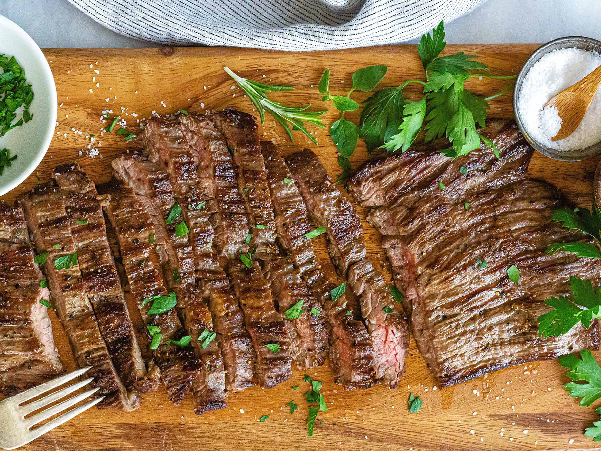

Skirt Steak Recipe

The well-done skirt steak you can't miss. It will drive you crazy
Ingredients
- 3 cloves of garlic, minced
- 2 tablespoons of balsamic vinegar, or to taste
- 2 tablespoons of grill seasoning
- 2 tablespoons of chopped fresh oregano
- salt and ground black pepper to taste
- 1 pound of skirt steak
- 2 tablespoons of olvie oil, or as needed
- 1/4 cup of water, or as needed
- 1 onion, chopped
- 1 (8 ounce) of can mushrooms, drained
- Whisk garlic, balsamic vinegar, grill seasoning, oregano, salt, and pepper
together in a large bowl.
- Add steak and toss to evenly coat.
- Cover bowl with plastic wrap and marinate in the refrigerator, 8 hours to overnight.
- Heat olive oil in a skillet over medium-high heat until sizzling; add meat.
- Cook uncovered until liquids have drained from the steak, 3 to 5 minutes.
- Reduce heat to medium; cover.
- Cook steak for 15 minutes; uncover and flip.
- Add water to the skillet as needed to keep steak moist.
- Continue cooking until slightly firm, hot, and lightly pink in the center, about 15 minutes.
- An instant-read thermometer inserted into the center should read 140 degrees F (60 degrees C).
- Transfer meat to serving plate; reserve liquid in the skillet.
Press to return to homepage
Press to go to top of page